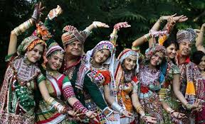
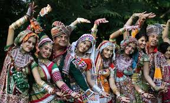

GUJARAT
Home Introduction Food Festivals Dance Style Dressing Style BacktoHome

Gujarat a state in western India, is known for its rich cultural heritage. It reflects a mix of tradition and modern life. Gujarat stands out for its lively festivals, delicious food, and colorful crafts. The culture in Gujarat is a unique blend of the past and present. The people here are friendly and enterprising, and they speak Gujarati. The state also hosts lively celebrations like Navratri and Uttarayan, which make it special. Gujarat’s rich culture adds to India’s diverse mix, making it an interesting region.Stretching into the Arabian Sea, Gujarat is renowned for its beaches, temple towns, palaces and historic capitals. Wildlife sanctuaries, hill resorts and natural grandeur add to its beauty. The state’s major attractions include the only habitat of the Asiatic lions in India (Gir Forests), the Wild Ass Sanctuary and the Indo-Saracenic architecture of Ahmedabad. The colourful tribal villages of Kutch are also popular tourist destinations. Gujarat’s vast coastline is home to unique marine species and its varied geographical locations are said to make it a melting pot of culture, people, places and history.

Food culture means the way people eat and enjoy food in their daily lives. It includes their habits, traditions, and the things they believe about food. Different cultures have their own unique foods, which help them keep their identity. Traditional dishes are an important part of this food culture, and when people share a meal with friends and family, it creates a warm and friendly atmosphere. Food culture is important because it uses local and seasonal ingredients, which helps us connect with our own culture and other cultures. While food is important in most cultures, some cultures value it more than others. Writing about food and culture allows people to explore their love for food, like trying different dishes from around the world, learning about American cooking, or discovering foods introduced by immigrants.
Intro


Gujarat has a rich culture with lively traditional dances. These dances are colorful and full of energy, reflecting the local way of life.
One famous dance in Gujarat is Garba.
It’s named after the Sanskrit words for “womb” and “lamp.” People perform Garba around a central lamp or an image of Goddess Shakti. Garba celebrates fertility, honors women, and pays tribute to mother goddesses. It’s also part of the nine-day Navratri festival in September or October.
In Garba, people dance in a circle, moving counterclockwise around a picture of a mother goddess like Durga or a symbol of her creative power, often an illuminated clay or water pot.
Gujarat also enjoys other spiritual dances, like those from Sufi culture. The state has a rich tradition of classical dance forms like Bharat Natyam, Kathak, and Odissi, which are also popular.
One major annual dance festival in Gujarat is the Modhera Dance Festival. It’s a platform for artists, both established and emerging, to showcase their talents against the backdrop of the Sun Temple.
 

Gujarat, a culturally rich state in India, has special cultural dress of Gujarat its lively culture. The way people in Gujarat dress is different from the rest of India, blending old traditions with new ones.
For men, the traditional Gujarati of Gujarat is a dhoti and kurta, often with a phento (a type of turban). On special occasions, they wear a kediyu and phento. Chorno, loose cotton pants, are also worn by Gujarati men. Chorno can be tied with a string or have elastic at the waist.
Cultural dress of Gujarat for women usually includeschaniya choli or ghagra choli, along with chaniyo, choli, chunni, and saree, along with an odhni (dupatta or chunni).
The chaniya looks like a lehenga or ghagra and includes a blouse and an odhni or dupatta.
In cities, where women work, wearing sarees every day can be hard. People wear traditional clothes like these during special times, like weddings or Navratri festivals. The clothes in Gujarat are known for their bright colors, detailed designs like bandhani or bandhej, and embroidery with gold and zari threads. People also wear fancy jewelry with these outfits to complete the look.
| Year | Population | Male | Female | Sex Ratio | Literacy |
|---|---|---|---|---|---|
| 2020 | 6.04 crores | 31,491,260 | 28,948,43 | 919 | 78.03 % |
| 2021 | 6.50 crores | 32,589,260 | 28,125,43 | 981 | 79.04 % |
| 2022 | 7.04 crores | 33,491,260 | 29,948,43 | 999 | 79.03 % |
| 2023 | 7.50 crores | 33,666,260 | 28,948,43 | 1000 | 89.03 % |